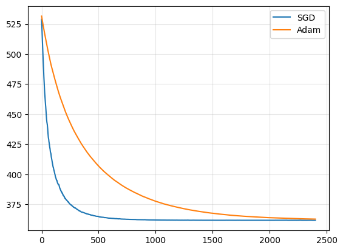
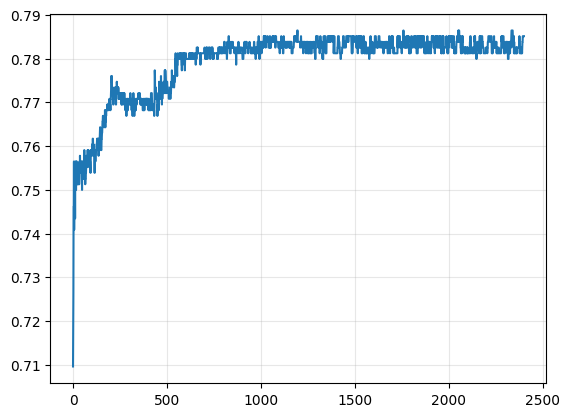

import numpy as np
import pandas as pd
train_data = pd.read_csv("data/train.csv")
# Select some useful continuous features
features = ["LotArea", "OverallQual", "YearBuilt"]
X = train_data[features].values
Y = train_data["SalePrice"].values.reshape(-1, 1)
# train_data = np.genfromtxt("data/train.csv", delimiter=",")
# X = train_data[1:, (4, 17, 19)]
# Y = train_data[1:, -1].reshape(-1, 1)
# Normalize features
X = (X - X.mean(axis=0)) / X.std(axis=0)
Y = (Y - Y.mean(axis=0)) / Y.std(axis=0)
# Add bias term
X = np.hstack([np.ones((X.shape[0], 1)), X])
N, d = X.shape
print(f"Dataset size: {N} samples, {d} features (including bias)")
Dataset size: 1460 samples, 4 features (including bias)
def l(Theta, X, Y):
return np.mean(np.square(X @ Theta - Y))
def grad_l(Theta, X, Y):
return 2 * X.T @ (X @ Theta - Y) / X.shape[0]
def accuracy(Theta, X, Y):
preds = sigmoid(X @ Theta) >= 0.5
return (preds == Y).mean()
def SGD(l, grad_l, X, Y, Theta0, lr=1e-2, batch_size=32, epochs=10):
"""
Simplified Stochastic Gradient Descent (SGD) implementation.
l: loss function, grad_l: gradient wrt Theta
X, Y: dataset
Theta0: initial parameters
lr: learning rate (eta)
"""
# Save the value of the loss over the iterations
loss_val = []
# Save the value of the accuracy over the iterations
acc_val = []
Theta = Theta0
for epoch in range(epochs):
# Something
# Step 4: Restart the data and shuffle
shuffle_idx = np.arange(len(X))
np.random.shuffle(shuffle_idx)
X = X[shuffle_idx]
Y = Y[shuffle_idx]
n_batches = len(X) // batch_size
for batch in range(n_batches):
# Step 1: Randomly sample a batch from data
Xb = X[batch * batch_size : (batch+1) * batch_size]
Yb = Y[batch * batch_size : (batch+1) * batch_size]
# Step 2: Compute the grad_l over Xb, Yb
g = grad_l(Theta, Xb, Yb)
# Step 3: Perform one step of GD on g
Theta = Theta - lr * g
# Update the loss_val list
loss_val.append(l(Theta, X, Y))
acc_val.append(accuracy(Theta, X, Y))
return Theta, epoch, loss_val, acc_val
# Theta0 = np.zeros((X.shape[1], 1))
# Theta, epochs, loss_val = SGD(l, grad_l, X, Y, Theta0, lr=1e-3, batch_size=32, epochs=100)
# Visualize the loss
import matplotlib.pyplot as plt
plt.plot(loss_val)
plt.grid(alpha=0.3)
plt.show()
---------------------------------------------------------------------------
NameError Traceback (most recent call last)
Cell In[3], line 4
1 # Visualize the loss
2 import matplotlib.pyplot as plt
----> 4 plt.plot(loss_val)
5 plt.grid(alpha=0.3)
6 plt.show()
NameError: name 'loss_val' is not defined
def adam(l,
grad_l,
Theta0,
X, Y,
beta1=0.9, beta2=0.999, eps=1e-8,
batch_size=64,
lr=1e-3,
epochs=500):
N, d = X.shape
Theta = Theta0.copy()
m = np.zeros_like(Theta)
v = np.zeros_like(Theta)
t = 0
losses = []
for epoch in range(epochs):
idx = np.random.permutation(N)
for start in range(0, N, batch_size):
batch_idx = idx[start:start+batch_size]
Xb, Yb = X[batch_idx], Y[batch_idx]
g = grad_l(Theta, Xb, Yb)
# Adam updates
t += 1
m = beta1 * m + (1 - beta1) * g
v = beta2 * v + (1 - beta2) * (g * g)
m_hat = m / (1 - beta1**t)
v_hat = v / (1 - beta2**t)
Theta -= lr * (m_hat / (np.sqrt(v_hat) + eps))
losses.append(l(Theta, X, Y))
return Theta, losses
Theta_adam, loss_adam = adam(l, grad_l, Theta0, X, Y, batch_size=32, epochs=100, lr=1e-3)
---------------------------------------------------------------------------
NameError Traceback (most recent call last)
Cell In[4], line 37
33 losses.append(l(Theta, X, Y))
35 return Theta, losses
---> 37 Theta_adam, loss_adam = adam(l, grad_l, Theta0, X, Y, batch_size=32, epochs=100, lr=1e-3)
NameError: name 'Theta0' is not defined
plt.plot(loss_val)
plt.plot(loss_adam)
plt.grid(alpha=0.3)
plt.legend(["SGD", "Adam"])
plt.show()
---------------------------------------------------------------------------
NameError Traceback (most recent call last)
Cell In[5], line 1
----> 1 plt.plot(loss_val)
2 plt.plot(loss_adam)
3 plt.grid(alpha=0.3)
NameError: name 'loss_val' is not defined
import numpy as np
import pandas as pd
# Download `diabetes.csv` from Kaggle and place it in notebook directory
df = pd.read_csv("data/diabetes.csv")
# df = np.genfromtxt("data/diabetes.csv", delimiter=",")
# X = df[1:, :-1]
# Y = df[1:, -1].reshape(-1, 1)
X = df.drop("Outcome", axis=1).values # features
Y = df["Outcome"].values.reshape(-1,1) # labels
# Standardize features
X_mean, X_std = X.mean(axis=0), X.std(axis=0)
X = (X - X_mean) / X_std
# Add bias term
X = np.hstack([np.ones((X.shape[0],1)), X])
N, d = X.shape
def sigmoid(t):
return 1 / (1 + np.exp(-t))
def l(Theta, X, Y):
# When you see Theta^T x <-> in matrix form you have
# X @ Theta
Y_hat = sigmoid(X @ Theta)
return - np.sum(Y * np.log(Y_hat) + (1-Y) * np.log(1 - Y_hat))
def grad_l(Theta, X, Y):
Y_hat = sigmoid(X @ Theta)
return X.T @ (Y_hat - Y)
# Train the model
Theta0 = np.zeros((X.shape[1], 1))
Theta_sgd, _, loss_sgd, acc_sgd = SGD(l, grad_l, X, Y, Theta0, lr=1e-3, batch_size=32, epochs=100)
Theta_adam, loss_adam = adam(l, grad_l, Theta0, X, Y, lr=1e-3, batch_size=32, epochs=100)
plt.plot(loss_sgd)
plt.plot(loss_adam)
plt.legend(["SGD", "Adam"])
plt.grid(alpha=0.3)
plt.show()
plt.plot(acc_sgd)
plt.grid(alpha=0.3)
plt.show()

